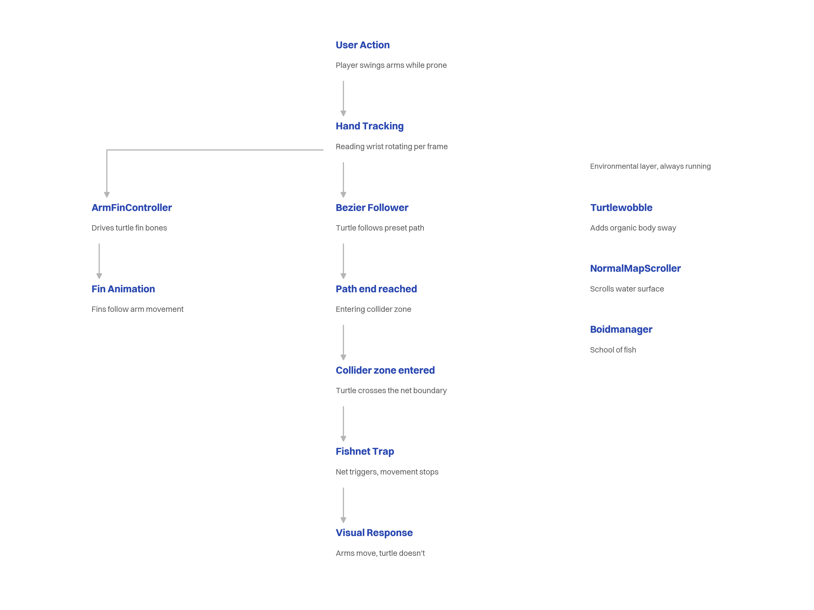
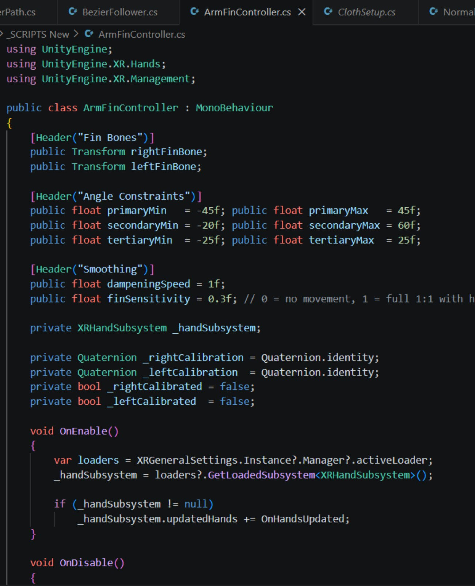
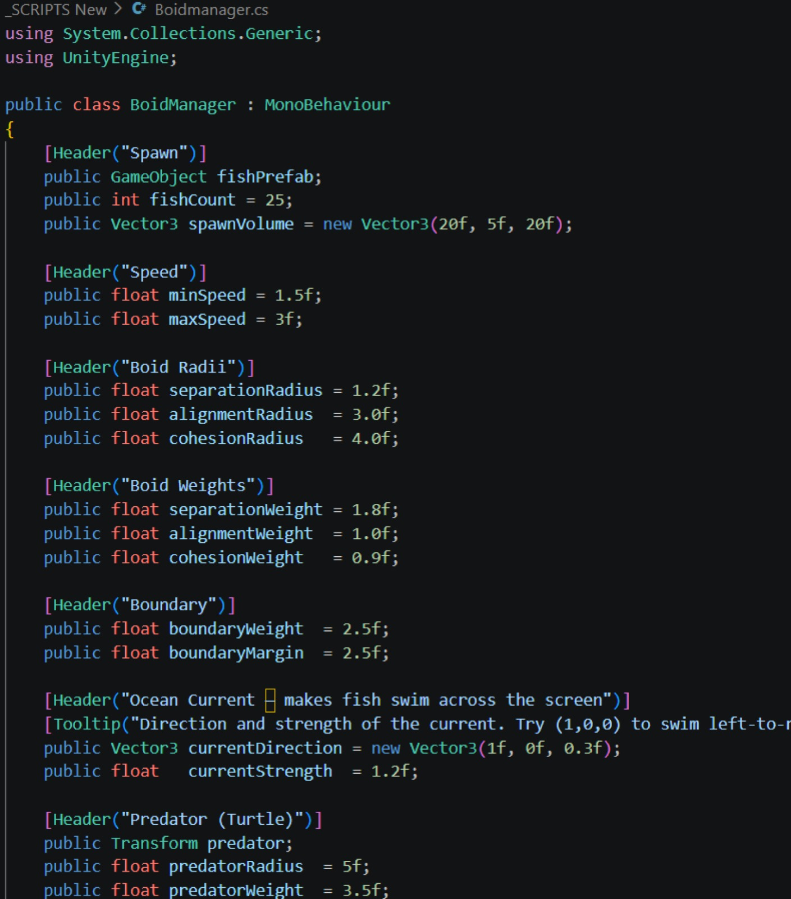

This project is set along Rushikulya beach in Odisha, one of the world's major nesting grounds for olive ridley turtles. Every year thousands return to lay eggs, and hatchlings make their first journey to the sea. That cycle is tied closely to the lives of the local fishing communities who've worked this coast for generations, and the balance between the two is a fragile one.
Working in a group of three, we explored this same context through three different lenses, each of us taking on the perspective of a species trying to sustain life along Rushikulya. Put together, the three perspectives form one narrative, showing how different species share the same space and depend on the same ecosystem, each just trying to continue its own way of life.
The final build uses full hand and arm tracking, arrived at after a few earlier attempts that didn't hold up once tested.
VR Project
Early iteration used a linear narrative navigated through standard VR controllers.
Multisensory Project
Replaced controller navigation with full hand and arm tracking.
Motion sensors
Hardware limitations and wiring made the interaction too unstable to sustain.
Hand Tracking
Replaced motion sensors as a cleaner, more responsive solution, and became the final approach.
This is the turtle's perspective. We used VR specifically to work with a non human point of view, to look at the same coastline from an angle we don't usually get to take. Stepping into the role of an olive ridley, you move through the sea and sense what it might encounter as it nears the fishing community.
The experience unfolds in three fragments. They can be watched in any order, but all three need to be seen to understand what the piece is actually about. Context is withheld until the end, playing both perspectives builds an understanding that arrives only after the experience closes. It closes with data on factory pollution in Odisha and turtle survival rates, which reframes everything that came before it.
.png)

You start by lying flat on your stomach on the beanbag and putting on the headset. You're told you're a turtle, but the moment you see your fins moving with your arms inside the simulation, it becomes self-evident.
You move by swinging your arms. The underwater environment is quiet and navigable, and the world responds to your movement in real time.
Then the net appears. Your arms keep moving but nothing happens. Forward motion stops, and there's nothing to do about it. This is where the emotional core of the experience sits.


Environment & Assets
Bycatch is a real and ongoing problem at Rushikulya, turtles get caught in nets built for fish. Industries near the river add to the strain, releasing chemicals and waste into the water. Restricted fishing zones during nesting season push fishermen and turtles into closer contact than either would likely choose on their own. The net in the simulation isn't a dramatic device, it's the actual thing turtles run into, and the project exists to put that collision somewhere you can feel it rather than just read about it.